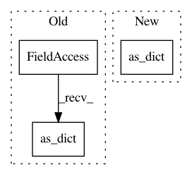

1d8b2263f00bde1730b52f2e78c95cb14e9899b9,official/nlp/configs/bert.py,,instantiate_classification_heads_from_cfgs,#Any#,52
Before Change
def instantiate_classification_heads_from_cfgs(
cls_head_configs: List[ClsHeadConfig]) -> List[layers.ClassificationHead]:
return [
layers.ClassificationHead(**cfg.as_dict()) for cfg in cls_head_configs
] if cls_head_configs else []
After Change
def instantiate_classification_heads_from_cfgs(
cls_head_configs: List[ClsHeadConfig]) -> List[layers.ClassificationHead]:
return [
layers.ClassificationHead(**cfg.as_dict()) for cfg in cls_head_configs
] if cls_head_configs else []
In pattern: SUPERPATTERN
Frequency: 3
Non-data size: 3
Instances
Project Name: tensorflow/models
Commit Name: 1d8b2263f00bde1730b52f2e78c95cb14e9899b9
Time: 2020-07-03
Author: gardener@tensorflow.org
File Name: official/nlp/configs/bert.py
Class Name:
Method Name: instantiate_classification_heads_from_cfgs
Project Name: tensorflow/models
Commit Name: 4fc7f99470ebe5ee491db58b7fa0d61794c5a112
Time: 2020-07-03
Author: gardener@tensorflow.org
File Name: official/nlp/configs/bert.py
Class Name:
Method Name: instantiate_classification_heads_from_cfgs
Project Name: tensorflow/models
Commit Name: c9ac3e2c20d85aec826d90614bfd90ae519c3736
Time: 2020-06-05
Author: hongkuny@google.com
File Name: official/nlp/configs/bert.py
Class Name:
Method Name: instantiate_from_cfg